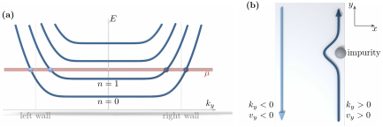
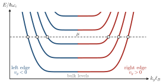

Advanced Quantum Materials 2027 · All lectures · Lecture notes
Session 4. Electrons in a Magnetic Field, Quantum Hall Effect and Landau Levels
4.5 Edge states and why an insulating bulk still conducts
There is an obvious puzzle. If the chemical potential is in a gap between two Landau levels, the bulk of the sample is by definition an insulator. There is no partially filled band, and there are no bulk states at the Fermi energy. So how can such a system carry a finite, quantized current?
The answer is the same as in the general bulk-boundary argument of Section 3.7. A nonzero Chern number cannot end without consequences. At any interface where the Chern number changes there must be protected, gapless and chiral edge modes. Here the interface is the boundary between a sample with Chern number \(N\) and the vacuum, which has \(C=0\), so there are \(N\) such modes. A chiral mode propagates in only one direction, and the number of edge modes at an interface is equal to the difference in Chern number across it. Every real sample is finite, so it always has an edge, and the edge states are always there, even when we do not think about them. A voltage between the top edge and the bottom edge of the sample creates an imbalance between the edge electrons that move to the right and the ones that move to the left. This imbalance is the quantized Hall current.
The band structure of a ribbon, which is a sample that is infinite in \(y\) and finite in \(x\), shows this picture in a completely explicit way. Next to the flat bulk Landau levels, we find a set of dispersive states localized at the left edge, which all propagate in one direction. A mirror set is localized at the right edge and propagates in the opposite direction. Each propagation direction is tied to a location, the left edge or the right edge. So an impurity on the left edge cannot scatter a left-moving electron into a right-moving one, because the right edge is at a macroscopic distance. There is no available final state, so there is no backscattering, and the edge transport has no dissipation. Figure 4.1 shows the ribbon spectrum next to its real-space picture, together with the chiral modes that cross the chemical potential.

An impurity sits on the left edge of a quantum Hall ribbon. Why can it not backscatter an edge electron?
Show the answers
- A. ✗ False
This is false. An impurity much stronger than the Landau level gap also cannot reflect the electron, which goes around it in the same direction. The reason is the missing final state, and not the strength.
- B. ✓ True
This is true. On one edge all the modes propagate in the same direction. A state that propagates the other way is on the other side of the sample, and a local impurity cannot connect the two.
- C. ✗ False
This is false. The magnetic field breaks time-reversal symmetry in this system. Time reversal protects the helical edge of the quantum spin Hall insulator of Section 3.11b, and here the chirality does the job.
The chemical potential moves from the gap above the first Landau level to the gap above the third. How do the number of chiral modes at one edge and \(\sigma_{xy}\) change?
Show the answers
- A. ✗ False
This is false. The number of modes is \(C\) and \(\sigma_{xy}=Ce^2/h\). A single chiral mode carries \(e^2/h\), so \(3e^2/h\) needs three modes.
- B. ✓ True
This is true. The number of chiral modes at an edge is equal to the Chern number of the bulk, which counts the filled Landau levels. The Hall conductance is this number times \(e^2/h\).

The chemical potential in the gap above the third Landau level. Each edge has three crossings, marked by the circles, which are the three chiral modes. - C. ✗ False
This is false. Two modes and \(2e^2/h\) belong to the gap above the second level. The gap above the third level has three filled levels, so three modes.
Notebook check-in: session4.ipynb, “Localization of the edge states in the quantum Hall effect in a ribbon” (Challenge), and “Localization of the edge states in the quantum Hall effect in an island” (Challenge)
Build a finite ribbon and a finite island in a magnetic field and look directly at where the edge-state wavefunctions are in real space. This confirms the separation between the left and the right edge, or along the perimeter of the island, which is the basis of the argument above for the absence of backscattering.
Try it. Run the cell and look at the four maps of the local density of states. At the two energies inside the gap above the zero mode, the weight sits at the edges and not in the middle. Change 0.01 in h.add_orbital_magnetic_field(0.01) to 0.02. The gap grows, and the edge weight stays at the boundary.
- In Section 5.14 the edge of a chiral p-wave superconductor has the same structure, with Majorana branches instead of electron branches.
- In Section 6.16 a topological magnon band has chiral magnon edge modes, which carry spin and energy and not charge.
- In Section 9.8 a vacancy is a boundary of zero size, and in a Chern insulator it binds a state inside the gap.